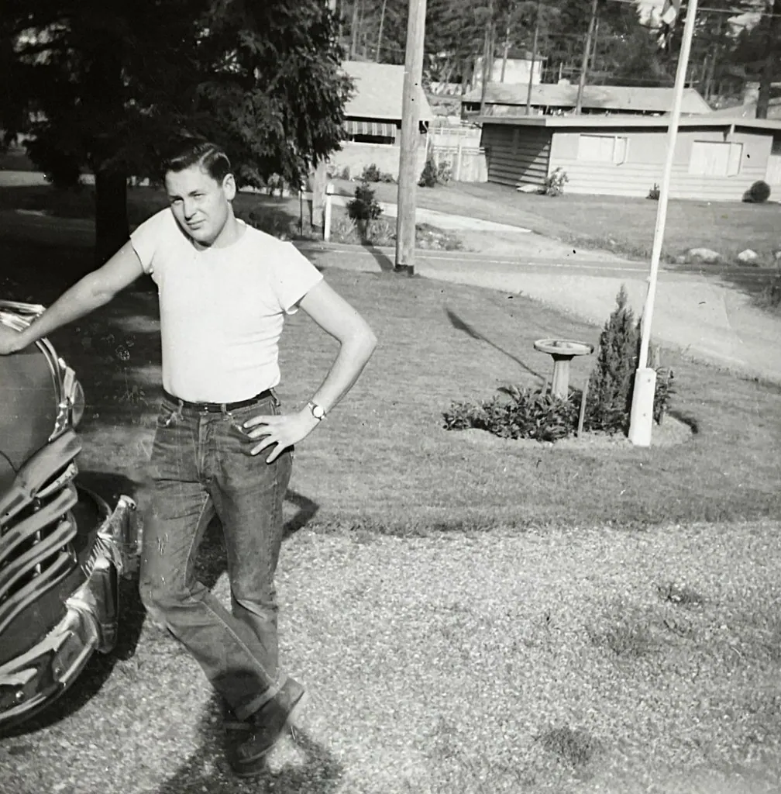

Decades of Classics
From the sculptural elegance of the 1930s to the big-bumpered survivors of the 1970s, here is a friendly cruise through the decades that shaped the classic car — and how to place any car in its era at a glance.

Whitewall Weekend is an independent educational website and is not affiliated with, endorsed by, or sponsored by any company mentioned.
The 1930s — elegance in hard times
The 1930s were the age of elegance on wheels, even as the Great Depression gripped the country. The cars of this decade, at least at the finer end, were long, graceful, and sculptural, with sweeping fenders, running boards along the sides, and headlamps that stood proud like a pair of lanterns. This was the era of the great Art Deco influence, when a car was styled like a piece of furniture or a grand building.
Underneath the beauty, the decade brought real progress. Engines grew smoother and more powerful, with the big V8 engine becoming a prize feature that put brisk performance within reach of more drivers. Closed steel bodies replaced the open, fabric-roofed cars of the 1920s, making motoring a warmer, quieter, all-weather affair. For collectors today, a well-kept car of the 1930s is a rolling sculpture from a vanished age of craftsmanship, and a reminder that beauty and engineering once walked hand in hand down the production line.
The 1940s — interrupted, then booming
The 1940s are a decade of two halves. For much of the first half, civilian car production in America all but stopped as factories turned to the war effort, building instead the trucks, jeeps, and machinery the times demanded. For several years, almost no new cars were made at all, and people kept their existing cars running by necessity and ingenuity.
When peace returned, the pent-up demand was enormous, and the late 1940s roared back to life. At first the new cars were much like the pre-war models, but change was coming fast. Styling began to grow smoother and more flowing, headlamps sank into the fenders, and the separate running board started to disappear into the body. The stage was being set for the explosion of style that the next decade would bring.
The 1950s — chrome, color, and confidence
If one decade defines the classic American car in the popular imagination, it is the 1950s. This was the age of exuberance: tailfins that grew taller each year, acres of gleaming chrome, two-tone and even three-tone paint in colors like turquoise, coral, and buttercup yellow. The cars were big, bold, and brimming with the optimism of the post-war boom. A new car was a statement, and the automakers competed to make the biggest statement of all.
Beneath the style, the decade brought real advances in comfort and convenience. Automatic transmissions became widely popular, freeing drivers from the clutch pedal. Power steering and power brakes made the big cars easy to handle, and options like air conditioning began to appear. The 1950s car was built to glide down a new interstate highway in air-conditioned comfort, and it looked like the future while doing it. For many collectors, these are the ultimate dream machines.
The 1960s — power and personality
The 1960s saw the car grow up and find its edge. Early in the decade, a new breed of smaller, sportier, more personal cars arrived, affordable and stylish, that a young buyer could make their own. As the decade went on, the emphasis turned increasingly to performance, and the legendary era of the American muscle car began to take shape — relatively light cars fitted with big, powerful engines, built for straight-line speed and youthful excitement.
It was also a decade of growing safety awareness. The 1960s brought the seat belt into widespread use, along with the beginnings of the safety standards that would shape every car to follow. So the sixties car is a fascinating blend: wilder and more powerful than ever before at one end of the range, and newly conscious of safety at the other. It is a decade that rewards the collector with enormous variety, from economical commuters to fire-breathing performance icons.
The 1970s — change on the horizon
The 1970s were a decade of big changes for the automobile. Early in the decade, the big, powerful cars of the sixties carried on, but new realities soon reshaped the industry. Tighter emissions and safety regulations, and a sharp rise in fuel prices partway through the decade, pushed automakers toward smaller, more efficient cars. Big chrome bumpers grew larger still to meet new impact rules, giving the cars of the era a distinctive, sturdy look.
For today's enthusiast, the 1970s are an increasingly appreciated and often more affordable corner of the hobby. The decade's cars tell the story of an industry in transition, and many of them have a bold, comfortable, unmistakably period character all their own. A well-kept survivor from the seventies is a genuine piece of automotive history, and a reminder that every era produces cars worth loving — a lesson the hobby teaches again and again as yesterday's ordinary cars become tomorrow's cherished classics.
The dream machines, described
Every decade produced cars that captured the public imagination, and part of the hobby's joy is knowing them by reputation even if you never owned one. We will describe rather than name specific models here, but the types are unmistakable. The 1930s gave us the grand boat-tailed roadsters and stately town cars of the luxury makes, impossibly elegant and impossibly expensive. The 1950s produced the great two-tone family cruisers, all fins and chrome, and the first affordable two-seat sports cars that let ordinary people feel the wind.
The 1960s delivered the compact, personal sporty coupe that a young buyer could customize, and later the fire-breathing muscle cars that remain among the most coveted classics of all. Each of these types has a devoted following today, a range of prices from the attainable to the astronomical, and a character all its own. Learning to recognize and appreciate them — to understand why one shape quickens the pulse and another soothes it — is a lifelong and wholly affordable pleasure, available to anyone with a folding chair and an afternoon at a show.
A gentle word on collecting
You need not be wealthy to be a collector; you need only be an enthusiast. Many of the hobby's happiest owners drive modest, affordable classics bought for the love of them, not for investment. If you do dream of owning one, the soundest advice is to buy the car that makes you smile rather than the one you think might rise in value, and to buy the best condition you can afford. Prices range enormously by make, model, and condition, and a local club or a recognized value guide for your chosen car will keep your expectations realistic.
Above all, remember that a classic is meant to be enjoyed. A car kept locked away as an investment misses the whole point; a car driven gently to the occasional show, waved at by children and admired by strangers, is living the life it was built for. Whatever you can afford, there is a classic out there to love — and a warm welcome waiting for you at the nearest cruise-in.
Why we preserve these cars
There is a quiet nobility in keeping an old car alive. Every classic on the road today survived only because someone, somewhere, chose to care for it rather than scrap it — to spend the time, the money, and the love required to keep a piece of history rolling. When you admire a gleaming classic at a show, you are really admiring decades of devotion by a chain of owners who refused to let it die.
To preserve a classic is to preserve a tangible link to the past, something our grandchildren can see, hear, and even ride in, rather than only read about. It keeps alive the craft of the people who built it and the memories of the people who drove it. That is why this hobby matters beyond the pleasure of it: collectively, enthusiasts are the custodians of an irreplaceable slice of history. Whether you restore a car to concours perfection or simply keep a humble driver running, you are part of that worthy work — and it is work that rewards you with joy at every turn.
How to read a car's decade
Once you know the signs, you can often guess a classic car's decade across a parking lot. A few cues give it away:
- Running boards and freestanding headlamps point to the 1930s and earlier.
- Smooth, rounded, "bulbous" bodies with integrated fenders suggest the 1940s.
- Tailfins, heavy chrome, and bright two-tone paint shout the 1950s.
- Crisper, leaner lines and a sporty stance mark the 1960s.
- Large impact bumpers and boxier shapes arrived in the 1970s.
- Whitewall tires and lots of bright chrome trim suggest a car from the 1950s or early 1960s heyday of such flourishes.
Half the fun of a car show is this gentle detective work — placing each car in its era and admiring how style evolved from one decade to the next. With a little practice it becomes second nature, and you will find yourself quietly dating the cars in old films and photographs too, a harmless and happy habit that never leaves you once learned. Speaking of which, the Car Show Guide will have you enjoying the next cruise-in like a seasoned regular.